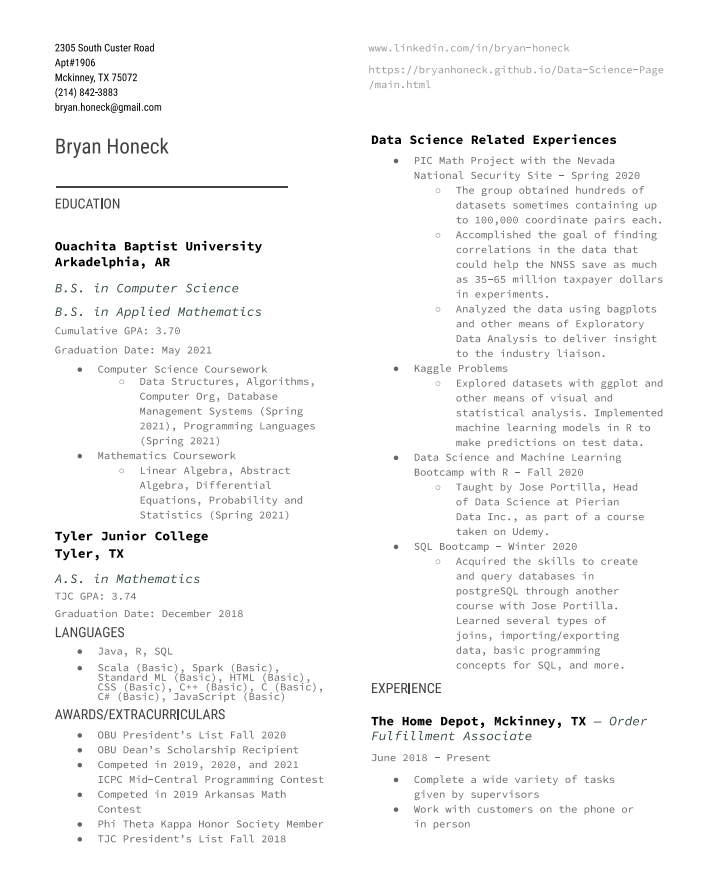

About Me
- I am a senior at Ouachita Baptist University in Arkadelphia, AR.
- I am graduating in May 2021 with a Bachelor of Science in Computer Science as well as a Bachelor of Science in Applied Mathematics.
- My current cumulative GPA is 3.70
- The languages I am most familiar with:
-
R: ggplot2, dplyr, kmeans, class, aplpack, knn, Amelia
-
Java: Data structures, algorithms, recursion
-
SQL: Basic queries, conditionals, joins; all mostly in pgAdmin
-
Other languages I have been exposed to or may have used in class:
-
HTML
-
CSS
-
Scala
-
Standard ML
-
C#
-
C
-
C++
Resume
PDF Download: View Resume
